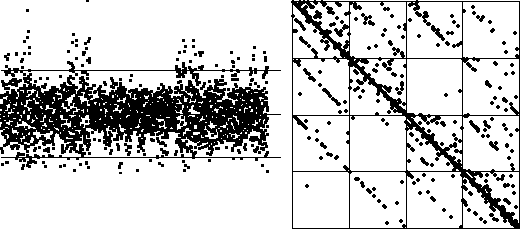
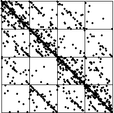

| Next, how strongly does the match between cartoon and real data depend on the random number sequence of the driven IFS? |
| Here is the equal size bin picture with a different random number sequence. |
However, here is the same data with
|  |
Although this graph does differ in some ways from the data driven IFS below (most notably in squares 11 and 41), in many main features it is still quite similar.
|  |
Return to Sample